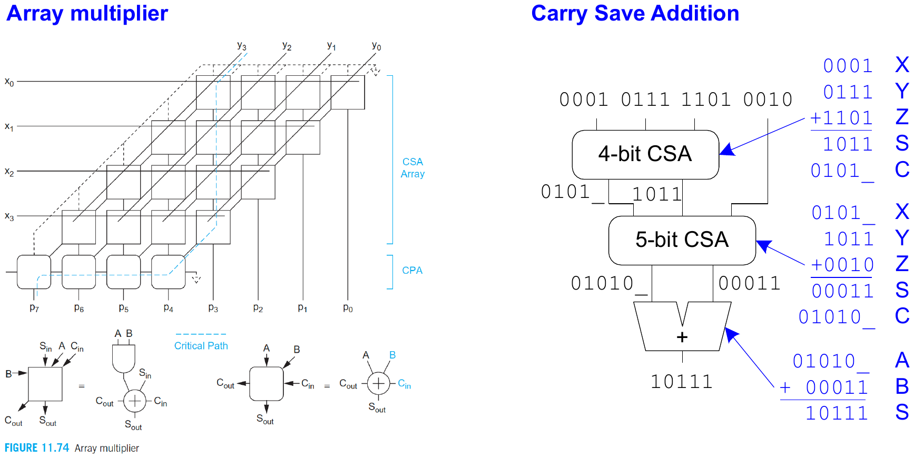

← 목차
L10 · 산술 논리 (2) — 곱셈
L10. 산술 논리 (2) — 곱셈
Arithmetic Logic Design (2) · 중간고사 범위
핵심 정리.
array multiplier = 부분곱(AND) + 가산기 2차원 배열 ·
carry-save addition: carry를 즉시 전파하지 않고 다음 행의 입력으로 넘김 → 여러 수를 더할 때 각 행이 1단 지연, 마지막에 CPA(최종 가산기) 한 번
10.1array multiplier
n×n 곱셈: 각 부분곱 비트 xᵢyⱼ는 AND 게이트 하나. 이를 가중치대로 정렬해 FA 배열로 누적. 구조가 규칙적이라 배치가 쉽지만 지연은 행 수에 비례.
10.2carry-save addition
직관: 올림을 옆으로 급하게 넘기지 말고 아래로 모아 두고, 마지막에 한 번만 처리.
- 각 CSA 행: 3개 입력 → (sum, carry) 2개 출력, carry ripple 없음.
- 여러 피가산수를 더할수록 이득 — 마지막 행만 carry-propagate adder(CPA)로 마무리.
array multiplier와 CSA

한 줄 정리 · 곱셈 = AND 부분곱 + FA 배열; CSA는 carry 전파를 마지막으로 미뤄 다수 피가산수 덧셈을 빠르게.